2025 – 2027
宾夕法尼亚大学 University of Pennsylvania
工程硕士 MSE · 电气与系统工程 ESE
美国宾夕法尼亚州费城 · 预计 2027 年 6 月毕业
Electrical & Systems Engineering · Control Systems · Renewable Energy
宾夕法尼亚大学电气与系统工程硕士生，关注控制系统、可再生能源系统、 电力系统建模仿真、机器人系统、反馈控制与工程实践。
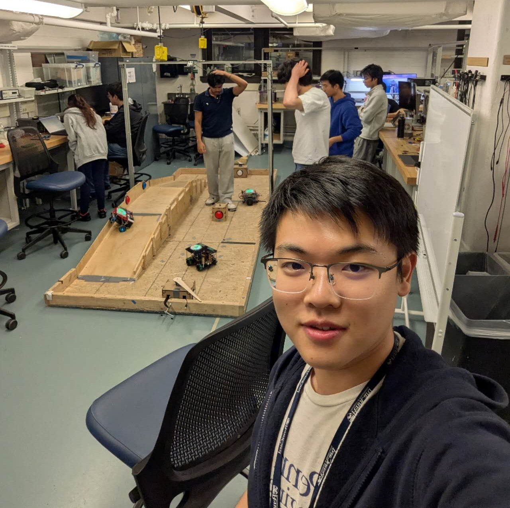
MSE Student at University of Pennsylvania
Expected Graduation: June 2027
我目前就读于宾夕法尼亚大学电气与系统工程硕士项目。本科毕业于华北电力大学自动化专业， 并曾于普渡大学西北分校电气与计算机工程专业交换学习。
我的学习与项目经历主要集中在控制系统、能源系统建模、MATLAB/Simulink 仿真、 嵌入式系统与机电一体化项目实践等方向。我希望将控制理论、工程建模与实际系统调试能力结合起来， 解决传统控制器在自动化系统中的实际应用问题。
工程硕士 MSE · 电气与系统工程 ESE
美国宾夕法尼亚州费城 · 预计 2027 年 6 月毕业
交换学习 · 电气与计算机工程 ECE
美国印第安纳州哈蒙德 · 2024 年 1 月 - 5 月
自动化学士学位 · 自动化专业
中国北京 · 2021 年 9 月 - 2025 年 6 月
C/C++, MATLAB/Simulink, ETAP, Quartus(FPGA), AutoCAD, NI Multisim, Arduino IDE, PLC 梯形图
反馈控制系统设计、频率分析、PID 控制器、过程控制、电路设计与分析、可再生能源系统、热工系统与仪表、锅炉原理
建模仿真、实验调试、工程制图、系统分析、团队协作与项目推进
ETAP · Renewable Energy · Microgrid
带领三人团队基于 ETAP 完成传统机组、风电场与光伏场联合方案设计， 搭建微电网基础模型并进行系统分析。通过年用电量计算分配风电场与光伏场供电量， 确定风机和光伏板数量及面积，并加入保护装置进行不同故障位置下的保护动作分析。
成果：课程项目获得满分。
MATLAB/Simulink · PID · Fuzzy Control
对实验结果进行处理后，完成过热蒸汽系统建模，并在 MATLAB/Simulink 中搭建系统 与经典 PID 控制器，使用不同方法整定 PID 参数；进一步自主学习并搭建模糊控制器及其参数整定。
成果：课程设计获得“优”评分。
PMSG · Frequency Response · Virtual Inertia
在 MATLAB/Simulink 中搭建基于永磁同步发电机 PMSG 的风电并网频率响应仿真模型， 包括风力机与 PMSG 数学模型、双 PWM 背靠背全功率变流器、DC-link 直流环节、 机侧/网侧变流器控制和虚拟惯性控制环节。
基于模型模拟负荷扰动下的系统频率响应，分析风机参与调频后在转子速度恢复阶段产生的 二次频率跌落现象，并应用自适应下垂控制策略验证其抑制效果。
ESP32 · FreeRTOS · Robotics
带领三人小队在两个月内完成基于 ESP32-S2 芯片的机器履带车项目，参与硬件选择、外观设计、 电路搭建与性能调试。主要负责墙跟踪控制器、障碍物/角落探测逻辑及代码编写。
项目最终实现履带式驱动、悬挂搭建，并使用 FreeRTOS 完成网页远程操控、 比赛中生命值交流和自动墙跟踪任务。
Servo Motor · 3D Printing · Embedded System
本项目意义在于认识servo电机驱动方式。硬件方面基于网络上公开3D模型进行修改、打印与上色，使用ItsyBitsy32u4芯片驱动两个mini servo电机； 软件方面，使用单片机ADC口采样输入电压，滤波方法采用取4次电压平均值，输出通道更新频率为50Hz。
我喜欢绘画和模型制作，两者都是不断打磨、追求极致的艺术；同时我也热爱足球，西甲、欧冠、世界杯……足球的世界纷繁多彩， 一周的烦躁总能在一场球赛后一扫而空。
素描和速写很方便，也很轻松。只需要一支铅笔，一张纸就能沉浸其中。 而数字绘画让色彩绘画更加便利，虽然相比实际使用颜料和画笔总有些不习惯的地方，但相信在不断练习后能更运用自如。
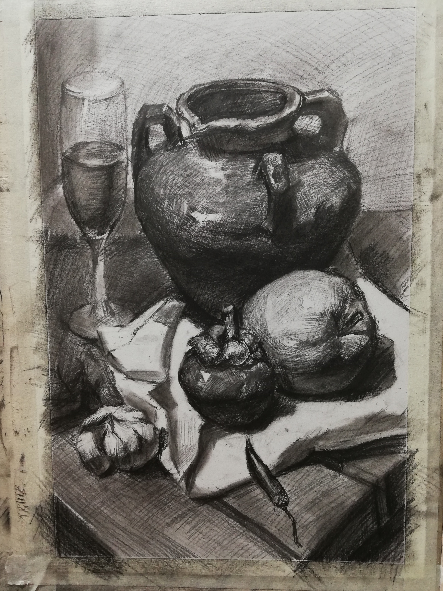
绘画作品 1
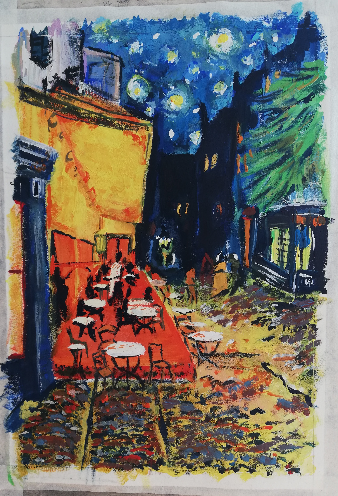
绘画作品 2
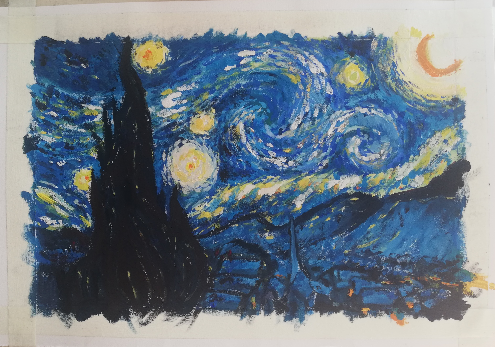
绘画作品 3
绘画作品 4
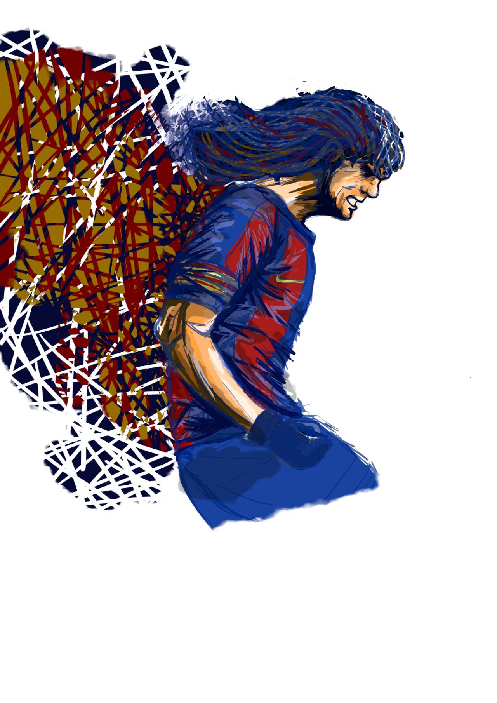
绘画作品 5
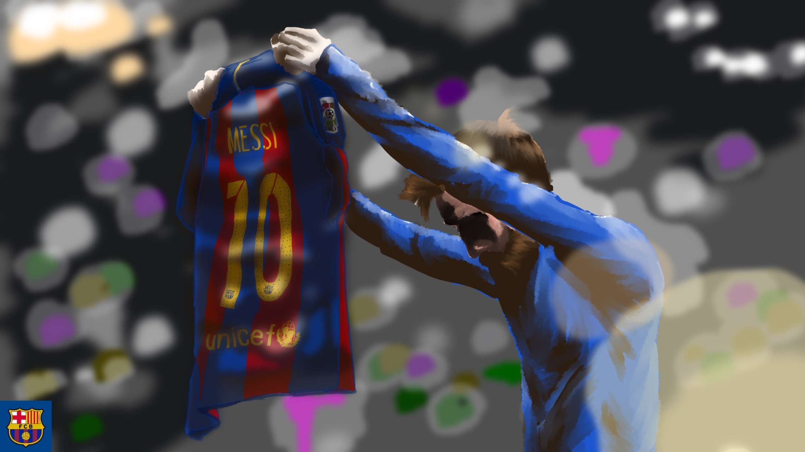
绘画作品 6
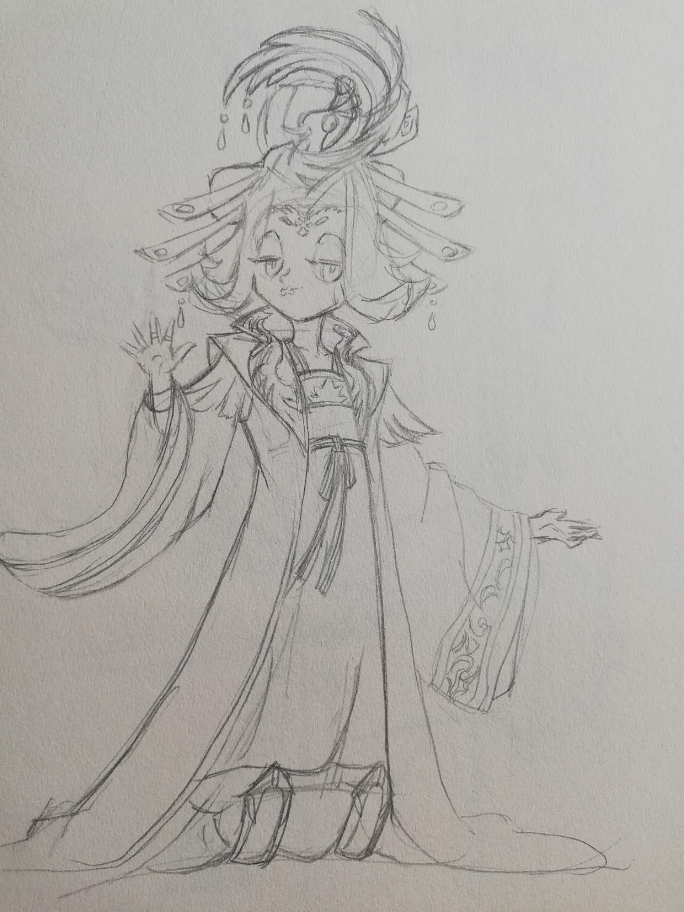
绘画作品 7
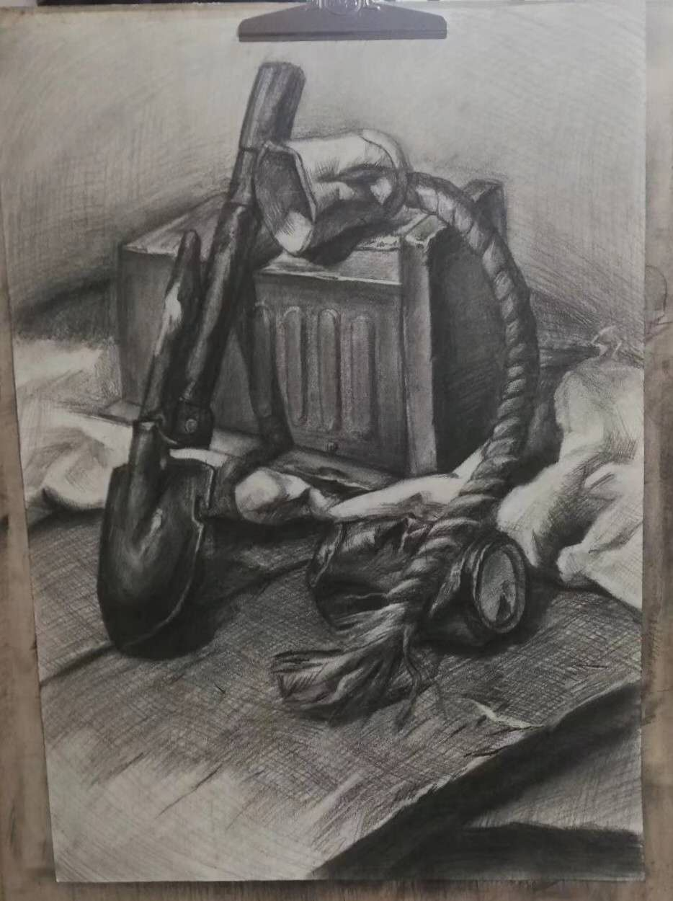
绘画作品 8
足球是我重要的兴趣之一。从小学体育课踢气排球开始，一直到大学，足球一直是我业余生活的重要部分。 我是个忠实的巴萨球迷，梦想着有一天能去巴塞罗那旅行。
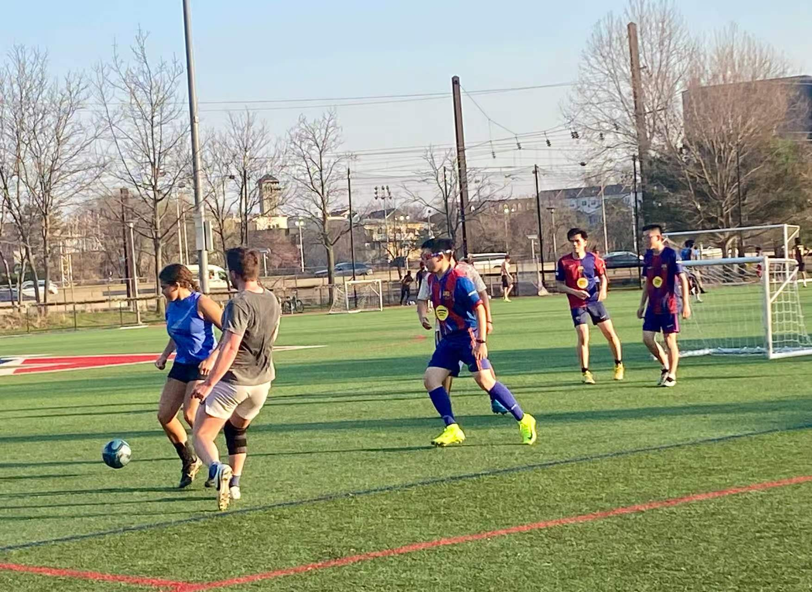
踢球中……
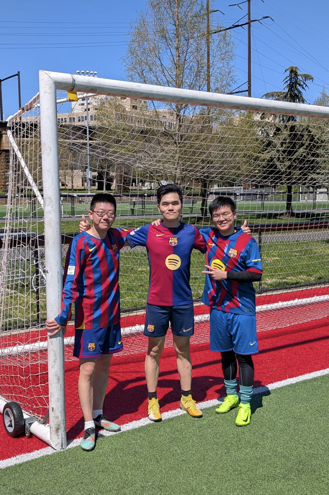
我（右）和踢球的好兄弟
制作模型也是我的兴趣之一。与绘画相似，做模型也是一个安静、细致的过程。 我很喜欢制作比例模型，将塑料模型逐渐制作得更贴近显示，仿佛一个缩小后的世界，这是所有模型爱好者的追求。
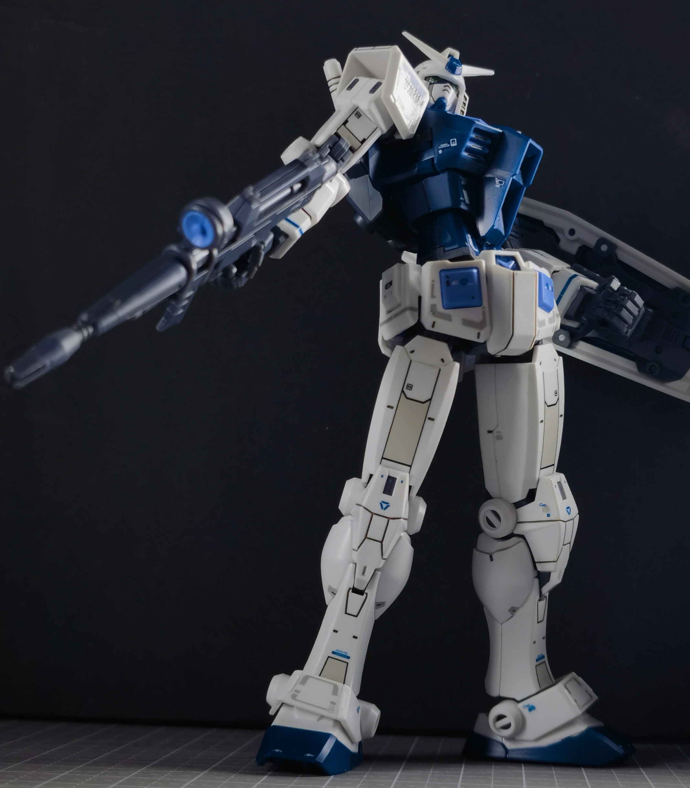
获奖作品-2024年西南地区高校模型大赛直做组亚军

获奖作品

制作前
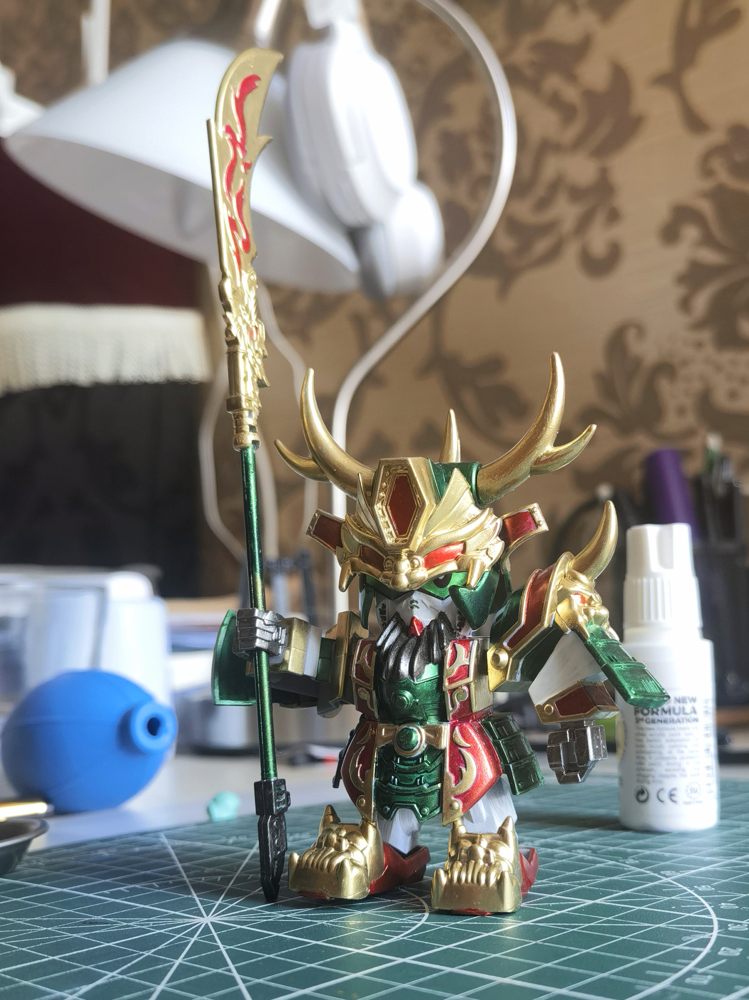
制作完成后
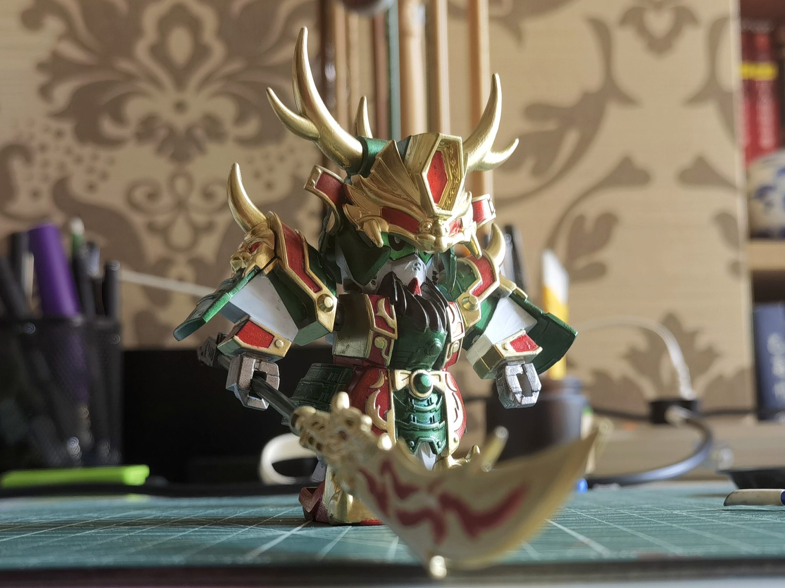
制作完成后
Thermal Control Maintenance · Power Plant
2024 年 7 月 – 2024 年 8 月 · 中国成都
跟随热控检修团队参与煤电机组现场学习，熟悉顺序控制流程、控制柜结构与电厂设备维护逻辑。 在工程师指导下完成系统巡检与问题记录，包括汽轮机、锅炉、减温水等系统，将课堂学习内容 与实际电厂场景结合，提升了热控系统认知与现场协作能力。
Teaching Assistant · English Education
2023 年 7 月 – 2023 年 8 月 · 中国成都
与新东方老师合作，负责监督学生课后学习，包括听写、作业、改错等。在实习过程中接触了许多不 同年龄段、不同性格的学生，在完成基础任务之余，也给学生们分享学习经验，与许多学生建立了良好关系。
如果你想了解我的项目经历、工程背景或合作机会，可以通过以下方式联系我。
Email: xie10@seas.upenn.edu
Phone (US): (+1) 856-328-4348
Phone (CN): (+86) 199-8049-4340
Resume: 下载中文简历